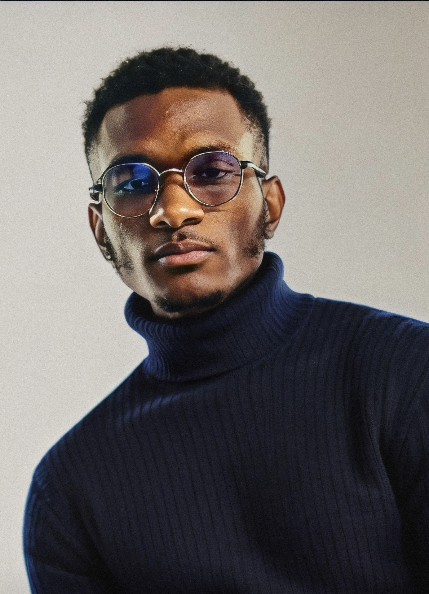

About Me
I am a versatile web and app developer with a strong background in Node.js, Ruby on Rails, Python, HTML, and CSS. With a Master's degree in Data Eng. & AI obtained in January 2024, I am passionate about leveraging technology to solve real-life problems. My diverse expertise spans from electrical and mechanical engineering to advanced AI, providing a unique perspective and innovative approach to every project I undertake.
Experience
Throughout my career, I have contributed to various projects, demonstrating my proficiency in both front-end and back-end development. I have built fully-responsive, user-centric websites and applications from scratch, ensuring clean, modern designs and seamless user experiences. My ability to integrate intuitive user interfaces with interactive elements using JavaScript, along with my experience in scalable architecture and real-time interactions, showcases my comprehensive skill set.
Main Skills
